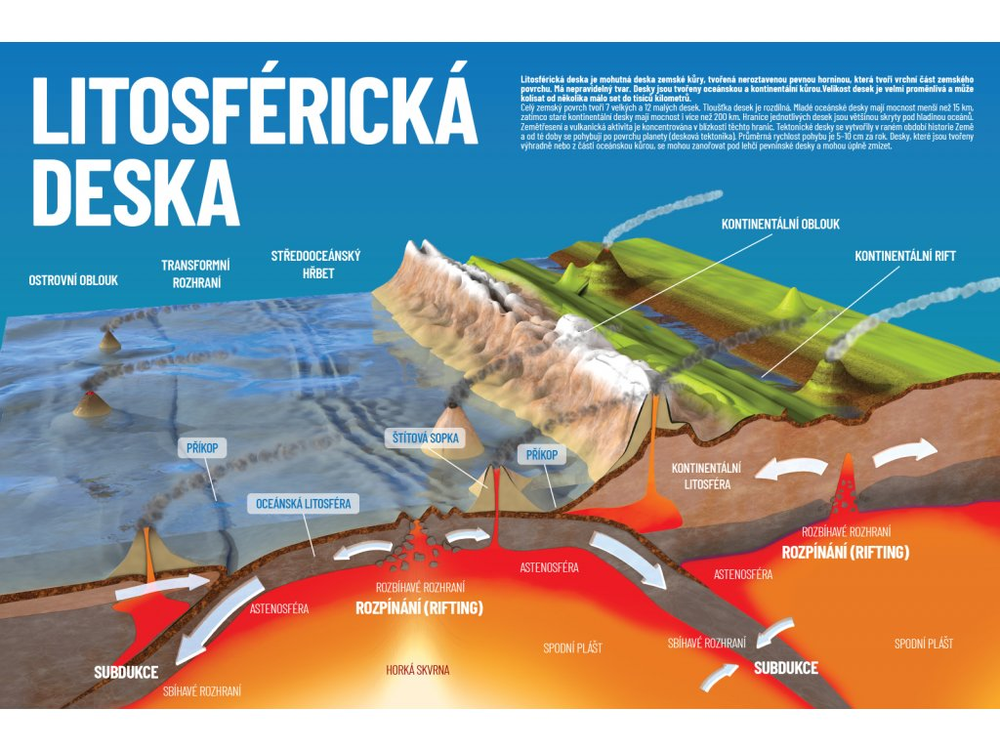

Co je desková tektonika?
Desková tektonika je geologická teorie popisující pohyb litosférických desek, které tvoří zemskou kůru. Je základem vysvětlení vzniku zemětřesení, sopek a pohoří.
Příčiny pohybu desek
Pohyb desek je způsoben prouděním hmoty v zemském plášti, které je vyvoláno teplem z nitra Země.